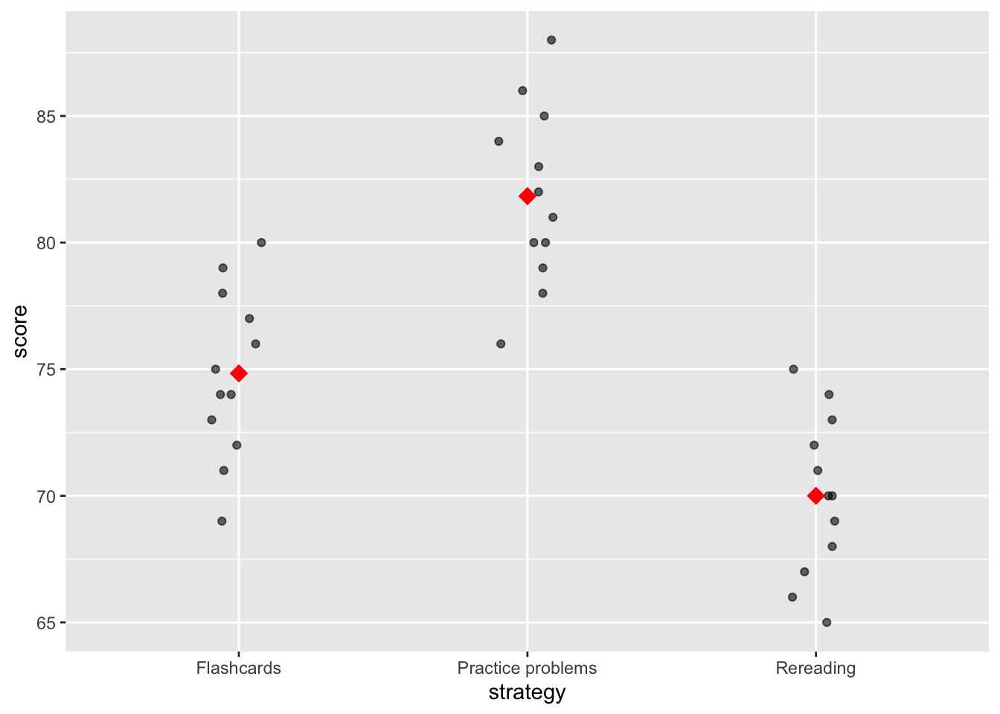

cor(mpg$displ, mpg$hwy)[1] -0.76602From the 10/26 in-class activity (Day 8)
A plot helps you see and communicate a pattern. A model puts a number on a relationship. You don’t need a model every time you make a plot, and you should always plot before you model.
Start with the question, then name the outcome (what I’m trying to understand) and the predictor (what might explain it), and their types.
| Outcome | Predictor | First plot to try | Possible model |
|---|---|---|---|
| Numerical | Numerical | Scatterplot (+ trend line) | Linear regression |
| Numerical | Categorical | Jittered points or boxplots by group, means marked | ANOVA / linear model with a categorical predictor |
| Categorical | Categorical | Two-way table; bar chart of proportions | Chi-square test |
| Binary (yes/no) | Numerical | Proportion “yes” across groups; jittered 0/1 points | Logistic regression |
| Count | Time | Counts over time | A count model (beyond this class) |
Correlation (r) measures the direction and strength of a linear relationship between two numerical variables, from −1 to 1.
The fitted line:
\[\hat{y} = b_0 + b_1 x\]
| Term | Meaning |
|---|---|
| Slope \(b_1\) | Predicted change in y for a one-unit increase in x |
| Intercept \(b_0\) | Predicted y when x = 0 (often an extrapolation, so not meaningful) |
| Residual | Observed y − predicted y: the vertical gap between a point and the line |
Question: How much does the predicted exam score go up per extra hour of studying?
Pseudocode: plot hours vs. score → fit a line with lm() → read the slope with coef() → interpret it with units.
(Intercept) study_hours
48.939810 4.147835 lm() makes the model but prints nothing; save it with <- and use coef() to see the numbersoutcome ~ predictor (y ~ x)# A tibble: 4 × 4
study_hours score predicted residual
<dbl> <dbl> <dbl> <dbl>
1 1 52 53.1 -1.09
2 2 55 57.2 -2.24
3 2 61 57.2 3.76
4 3 60 61.4 -1.38Answer: Each extra hour studied goes with about 4.1 more points, on average. The intercept (48.9) is the predicted score at 0 hours, which is outside the data (the minimum is 1 hour). A positive residual means the student scored above the line.
!! This is association, not causation: these are observational data, and motivation or prior knowledge could drive both study time and scores.
The same lm() works with a categorical predictor. It then compares group means.
scores <- tibble(
strategy = rep(c("Flashcards", "Practice problems", "Rereading"), each = 12),
score = c(72, 75, 78, 69, 74, 80, 76, 73, 77, 71, 79, 74,
78, 82, 85, 80, 76, 88, 83, 81, 79, 86, 84, 80,
65, 72, 70, 68, 75, 71, 69, 73, 67, 74, 70, 66)
)
ggplot(scores, aes(x = strategy, y = score)) +
geom_jitter(width = 0.1, height = 0, alpha = 0.6) +
stat_summary(fun = mean, geom = "point", shape = 18, size = 4, color = "red")
(Intercept) strategyPractice problems strategyRereading
74.833333 7.000000 -4.833333 strategyPractice problems = 7: practice problems averaged that many points more than flashcardsrelevel()) changes how the coefficients are written, not the group meansA one-way ANOVA asks: do the mean outcomes differ across two or more groups? It compares the variation between group means to the variation within groups.
Analysis of Variance Table
Response: score
Df Sum Sq Mean Sq F value Pr(>F)
strategy 2 849.56 424.78 38.161 2.611e-09 ***
Residuals 33 367.33 11.13
---
Signif. codes: 0 '***' 0.001 '**' 0.01 '*' 0.05 '.' 0.1 ' ' 1lm() give the same testWhen the outcome is yes/no (pass/fail), a straight line can predict impossible probabilities below 0 or above 1. Logistic regression models the probability of “yes” with an S-shaped curve that stays between 0 and 1.
Matching rule of thumb: numerical outcome → linear model; binary outcome → logistic regression.